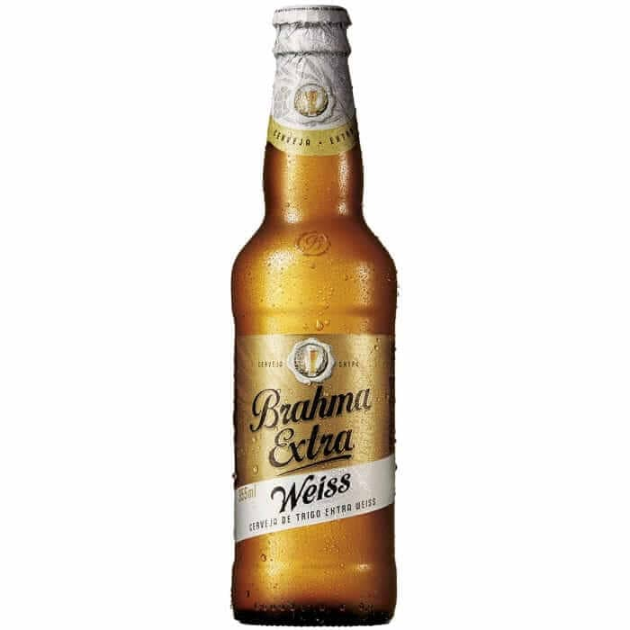
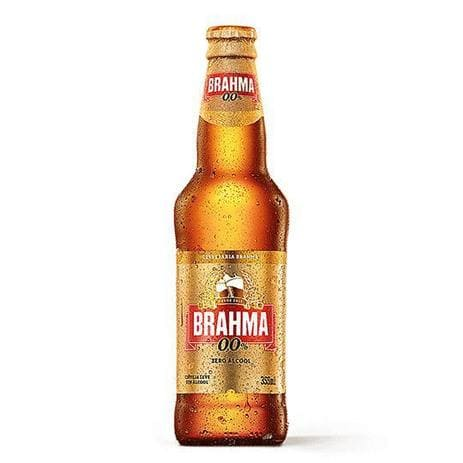
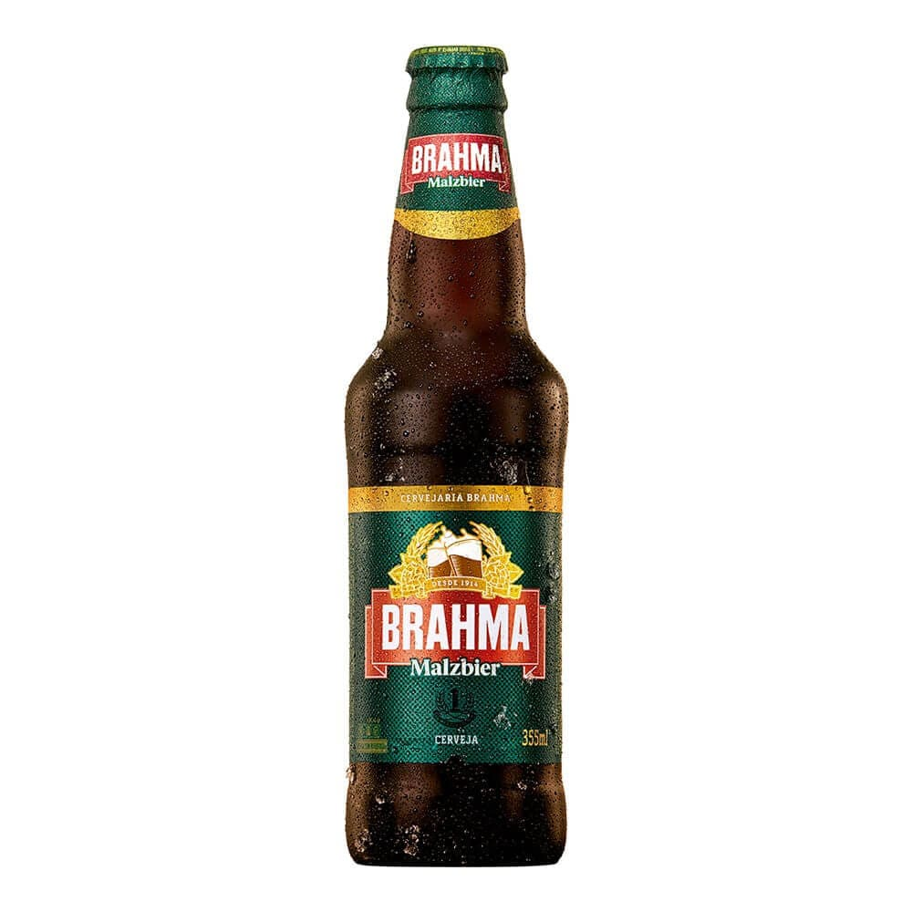

Stella Artois 330ml

R$ 11,90
R$ 10,90
Sua cor cristalina e aroma com notas maltadas são resultados do lúpulo tcheco Saazner, utilizado na produção.
Stella Artois sem glútem

R$ 11,90
R$ 10,90
Sua cor cristalina e aroma com notas maltadas são resultados do lúpulo tcheco Saazner, utilizado na produção.
Brahma Lager 355ml

R$ 11,50
R$ 10,50
Aparência clara, dourada límpida e brilhante. Seu aroma é maltado e possui um suave herbal além de notas levemente banana.
Brahma red Lager 355ml

R$ 11,50
R$ 10,50
Sua cor âmbar com tonalidade avermelhada é devido ao extrato de malte e, além de límpida e translúcida, também possui aroma de caramelo, malte torrado e leves notas frutais.
Brahma Weiss 355ml
R$ 11,50
R$ 10,50
Cor clara e opaca. Sabor frutado para banana e maçã, além de outras especiarias, como o cravo. É refrescante e de graduação alcoólica moderada. Possui leve acidez e espuma cremosa.
Brahma zero 355ml
R$ 11,50
R$ 10,50
É a escolha ideal para quem não pode consumir álcool sem abrir mão de apreciar o sabor de uma boa cerveja
Brahma Malzbier 355ml
R$ 10,80
R$ 9,80
A cerveja Brahma Malzbier é encorpada, com sabor ligeiramente adocicado e cor escura devido à adição de caramelo.
Corona 355ml

R$ 15,80
R$ 22,00
Coronita Extra é uma cerveja 100% importada do México. Refrescante, tem um leve amargor e vai muito bem com um limão. É uma clássica Standard American Lager, ou seja, possui cor clara, sabor leve e refrescante.
Bohemia 990ml

R$ 22,80
R$ 21,80
Cerveja Bohemia é a primeira cerveja do Brasil e tem sido muito refrescante, é produzida com malte 100% importado e lúpulo Saaz da República Tcheca.
Budweiser 330ml

R$ 11,50
R$ 20,50
Cerveja Budweiser que nunca mudou seu processo de fabricação e ingredientes desde a sua primeira fabricação em 1876. Além disso, é a única que usa Beechwood (lascas de madeira), que mantém o fermento em suspensão por mais tempo durante o processo de maturação.
Bohemian Pilsener 740ml

R$ 24,90
R$ 23,90
Ela é produzida com o lúpulo tcheco Saaz que proporciona um aroma fresco e frutado bem característico, além de uma coloração dourada profunda.
Patagonia Weisse 740ml

R$ 24,90
R$ 23,90
A Patagonia Weisse tem aroma cítrico marcante e cor clara — características tradicionais das cervejas de trigo do tipo Witbier. Notas de laranja, limão e abacaxi equilibram perfeitamente esse aroma e o sabor refrescante e pouco adocicado desta cerveja.
Patagonia Lager 740ml

R$ 24,90
R$ 23,90
A cor marrom acobreada e o sabor equilibrado de malte e lúpulo não deixam dúvidas, esta é uma American Amber Lager clássica. Os maltes Melanoidin, Carared e Carapils usados em sua produção lhe conferem um aroma sutil de caramelo e boa formação de espuma.
Spaten

R$ 11,90
R$ 10,90
Uma das primeiras puro malte do mundo. Feita com um rigoroso processo, seguindo a receita de Munique, onde foi criada em 1397. Uma cerveja puro malte com um sabor marcante e amargor presente.
Cerveja